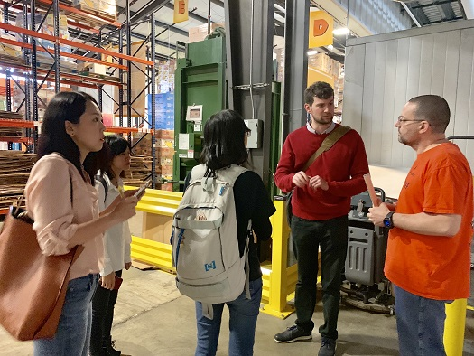
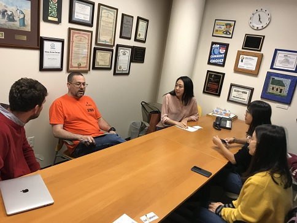
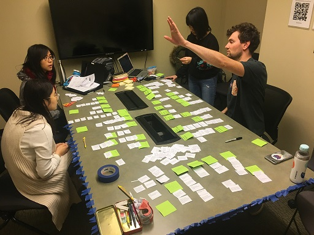
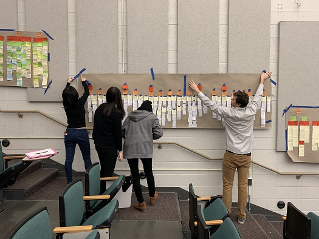

Food
Gatherers
For a class project in contextual inquiry and consulting foundations, I work in a team of five to help a local food bank to improve thier recall food handling workflow.
This is an ongoing project.
Problem Statement
Every week, Food Gatherers receives up to five food recall notices from USDA and other public sectors. With tons of food donated every week from all kinds of sources, however, Food Gatherers finds it challenging to sort the bulk of donated food and keep the recalled items from further distribution. Currently, the organization selects recall notices manually and only posts fewer than 30 recall food notices in the warehouse a time, resulting in the risk of serving tainted food to distribution channels. A better procedure is therefore urgently needed in order to ensure no tainted food is distrubuted to downstream pantries.
Role
For this project, I worked with four other classmates from the Master of Science in Information program as a team. As every of our team members are extremely participatory, we take turns managing meetings, leading discussions, and documenting data.
Qualitative Research
To understand the scope of the problem and its root causes, we conducted qualitative research both individually and collaboratively.
1. Background Research
In order to aquire a comprehensive understanding of our client, each team member worked separately to research on one aspect of the problem. I opted to analyze other food banks in the state of Michigan.
By gathering information from academic and organization website resources, I compared and contrasted all seven food banks in Michigan in terms of the following topics:
- Background
- Vision and focuses
- Resources
- Services, including regions, channels, and amount of food served
- Resources
- Food management practices
- Food recall management strategies
Particularly standing out from the comparison is how Food Gatherers presents information in their documents differently: while other food banks details out food handling process extensively and explicitly in training documents, Food Gatherers deploys a simpler approach, where training guidelines are presented in very simple charts. In addition,
2. Interviews
 
Concurrent with the background research phase, we first met the contact window of Food Gatherers for an initial interview, where the project scope, deliverables, and other interview candidates were discussed.
We then later worked in pairs and conducted six interviews with different roles in Food Gatherers' recall process:
To gain as much valuable data from our interviewees as possible, each interview was held following pre-designed interview protocols, where an overarching question has been idientified for individual interviewee. Three questions sets were then developed based on the overarching issue, with about three to four questions for each question set. The interviews turned out to take from 40 to 60 minutes.
3. Interpretation and Affinity Wall
 >
After the interview, we worked in a whole group for the interpretation session: for each interview, we played back the audio recording and noted down one issue for roughly each minute. As a result, we collected approximately 270 notes for all 6 interviews.
We then started to build an affinity wall from the notes to learn the most crutial issues of the problems.
To aim for most efficiency, I proposed a slightly different workflow from the instructor's guideline, which was then supported by the other members:
- Instead of laying out all notes on the wall and group directly, each of us take 20 random notes first.
- Individually, sort the notes at hand into clusters and name the clusters in a specific sentence. Leave extremely hard ones aside.
- One by one, each of us share the existing cluster names. If it happens that other people have almost identical group clusters, merge the groups.
- Each member take another 20 notes and repeat the steps.
The method turned out to work quite well. After the first few rounds, everyone of us started to have good sense of what clusters there were around our seats. Whenever any member was unsure of a certain note, he/she then read out the notes, while other members responded if a suitable cluster was nearby. The whole process was very dynamic.
From there, we started to build the second layer, which were meta-clusters. With each of us knowing what clusters were around, we would able to easily group relevant clusters into a larger meta-cluster. Interestingly, while summarizing from the cluster notes to name the meta-cluster, we were able to gain several insights that were not obvious before.
In the end, we built a wall of four layers, with particular findings presented below:
- Food Gatherers has never been reported to have distributed any recalled food items before. This has possibly contributed to the staff's over-confidence and lack of emergency. Currently, the recall notcies are filtered by one single person's self discretion before being posted in the sorting area.
- The food bank's belief that everyone can easily contribute to end hunger has led to lack of comprehensiveness in the sorting process.
- Visual clues are heavily relied on during the food sorting process: a volunteer needs to check expiration dates, food appearance, and recall notice flyers for each item.
- There is no dedicated staff for the recall procedure.